⚙️ I-бөлім. Өтінімдерді қабылдауға дайындық
Өтінімдерді дұрыс қабылдау үшін осы бөлімде көрсетілген әрекеттерді міндетті түрде орындау қажет. Бұл қадамдарды мектеп директоры орындайды.
📹 Видеоның сілтемесі: [Бұл жерге видео сілтемесін қойыңыз]
oqu.edu.kz сілтемесі арқылы өтіп, «Кіру» батырмасын басыңыз.
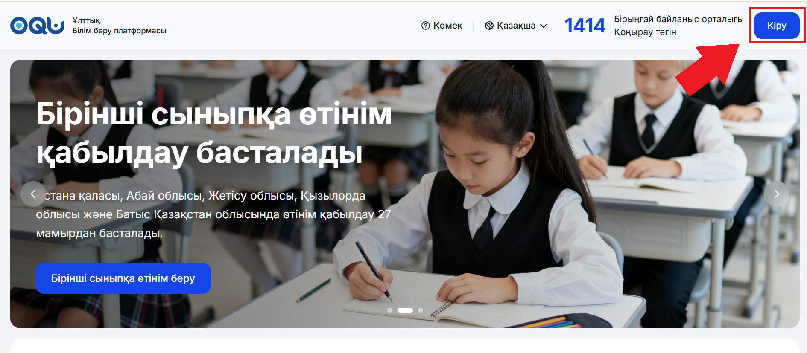
Порталға көрсетілген тәсілдердің бірі арқылы кіріңіз. Директор жеке тұлғаның ЭЦҚ-сы арқылы да, заңды тұлғаның ЭЦҚ-сы арқылы да кіре алады. Алайда, өтінімдерге қол қою үшін міндетті түрде заңды тұлғаның ЭЦҚ-сы талап етілетінін ескеріңіз.
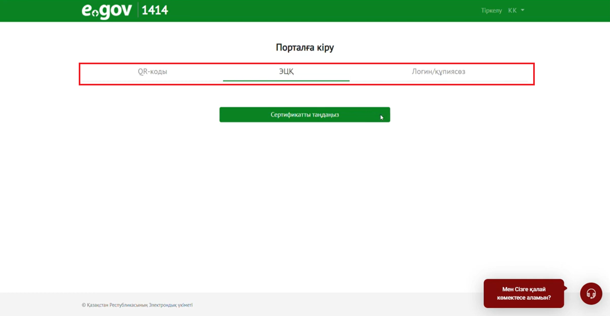
Егер сіз ЭЦҚ арқылы кірген болсаңыз, Мобильді азаматтар базасында тіркелген нөміріңізге бес таңбалы коды бар SMS келеді. Оны енгізіп, «Жүйеге кіру» батырмасын басыңыз. Жүйеге ЭЦҚ арқылы әр кірген сайын сізге осы код жіберіледі.
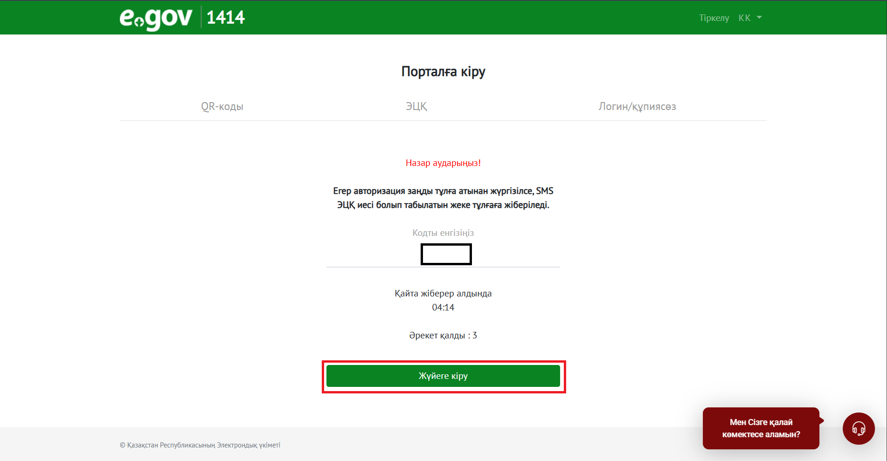
«Рұқсат беру» батырмасын басыңыз.
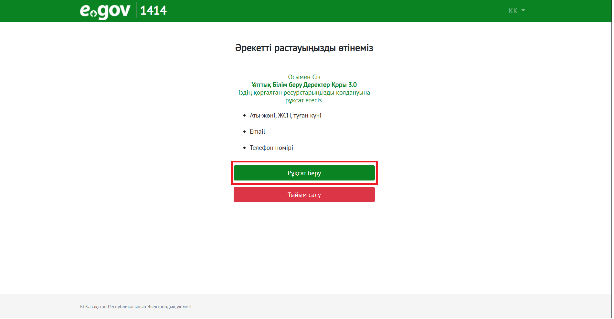
Жеке деректерді жинауға және өңдеуге келісіміңізді беріңіз.
Мобильді азаматтар базасында тіркелген нөміріңізге 1414 нөмірінен SMS келеді, оған 511 мәтінімен жауап беру қажет.
Жауапты SMS келген SIM-картадан жіберіп жатқаныңызға көз жеткізіңіз.
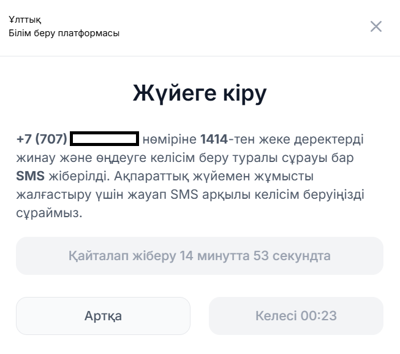

Директор қызметкерлерді қоспай-ақ өтінімдерді өз бетінше өңдей алады. Дегенмен, көп жағдайда өңдеумен басқа да қызметкерлер айналысады, сондықтан оларды алдын ала қосу қажет.
Паспорттаумен айналысатын (шағын аудандар мен лимиттерді тексеретін) и өтінімдер бойынша шешім қабылдайтын қызметкерлерді алдын ала анықтап алыңыз.
«Қызметкерлер» бөліміне өтіп, «Қосу» батырмасын басыңыз.
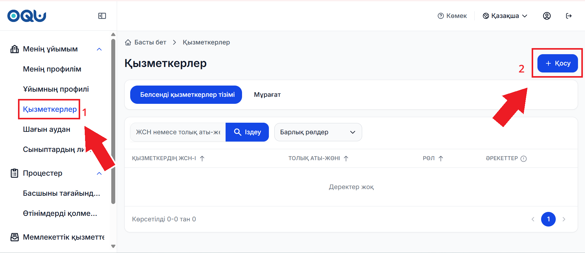
Қызметкердің ЖСН-ін енгізіп, «Жіберу» батырмасын басыңыз.
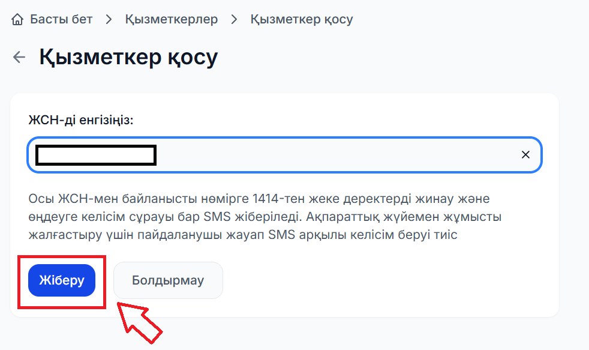
Қызметкердің нөміріне 1414 нөмірінен SMS келеді. Одан хабарламаға жауап беруін сұраңыз. Осыдан кейін «Келесі» батырмасын басыңыз.
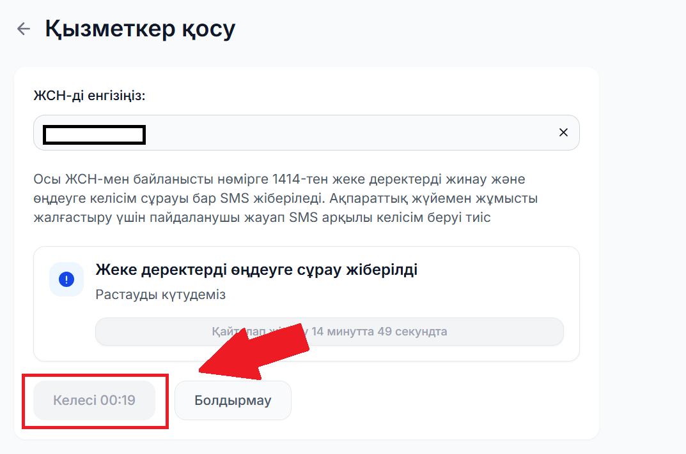

Ары қарай қызметкерге Орындаушы немесе ОБҰ қызметкері рөлдерінің бірін тағайындаңыз (екі рөлді қатар тағайындауға да болады).
ОБҰ қызметкері лимит пен шағын ауданды түзетуге жауап береді, ал Орындаушы өтінімдерді өңдеумен айналысады.
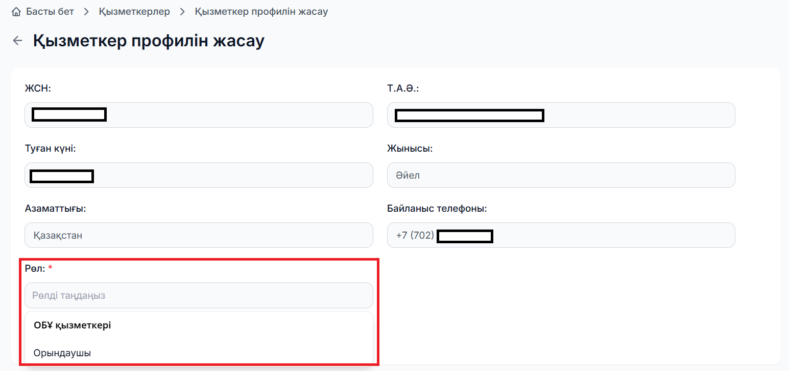
«Сақтау» батырмасын басыңыз.
Сынып лимиттері (бос орындар саны) мектепті, сыныпты, оқыту тілін және ағымдағы оқу жылын ескере отырып, әр параллель үшін бөлек анықталады.
Орындарды бөлу ережелері:
• Шағын ауданнан тыс өтінім бергендерге жалпы орындар санының төрттен бір бөлігі бөлінеді.
• Қалған орындар тіркелген мекенжайы бойынша мектепке қарасты өтінім жібергендерге, яғни шағын аудан бойынша беріледі.
Мысалы: егер сыныпта барлығы 40 орын болса, онда 10 орын шағын ауданнан тыс өтінім бергендерге, ал 30 орын шағын аудан бойынша өтінім бергендерге бөлінеді.
Назар аударыңыз: Барлық мәліметтер Ұлттық білім беру деректер қорынан (ҰБДҚ 2.0) автоматты түрде жүктеледі. Қажет болған жағдайда сыныптарыңыздың лимиттерін алдын ала тексеруіңізді сұраймыз.
Жеке кабинетіңізге кіріп, «Менің ұйымым» → «Сыныптардың лимиттері» бөліміне өтіңіз. Бөлімге мына сілтеме арқылы өте аласыз: https://oqu.edu.kz/organization/class-limits
Бұл бөлімде сіз жалпы орындар және сыныптар санын көре аласыз.
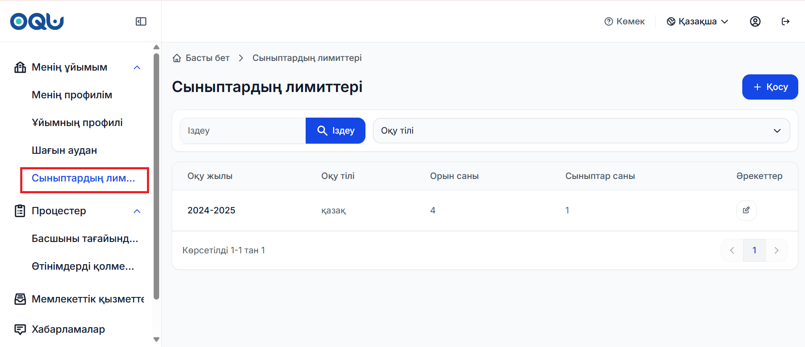
Қажетті сыныпты таңдап, «Өңдеу» белгішесін басыңыз.
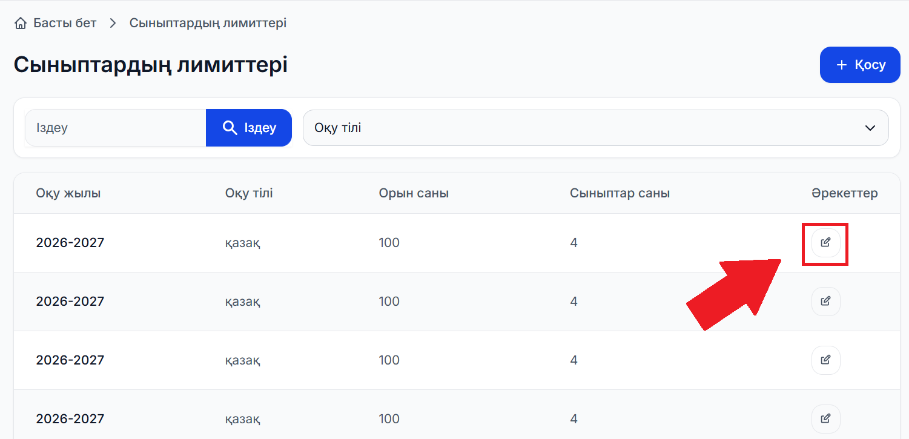
Орындар саны бойынша өзгеріс енгізіп, «Сақтау» батырмасын басыңыз. Әрбір оқыту тілі бойынша жеке параллель құрылады.
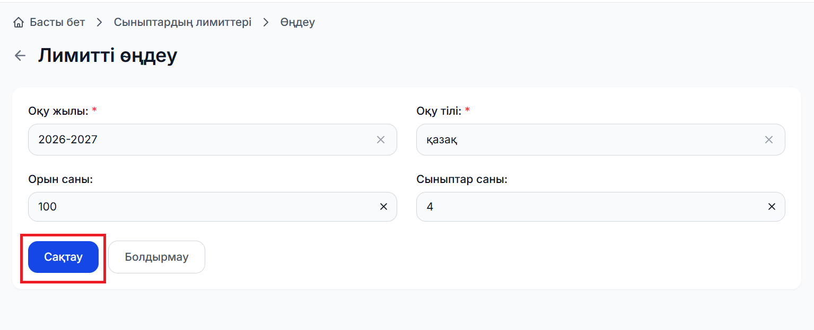
Қажет болған жағдайда жаңа лимит қоса аласыз. Ол үшін «Қосу» батырмасын басыңыз. Ары қарай оқыту тілін таңдап, сыныптар санын және сыныптағы орын санын көрсетіңіз. Оқыту тілдері ҰБДҚ 2.0 жүйесінен автоматты түрде жүктеледі.
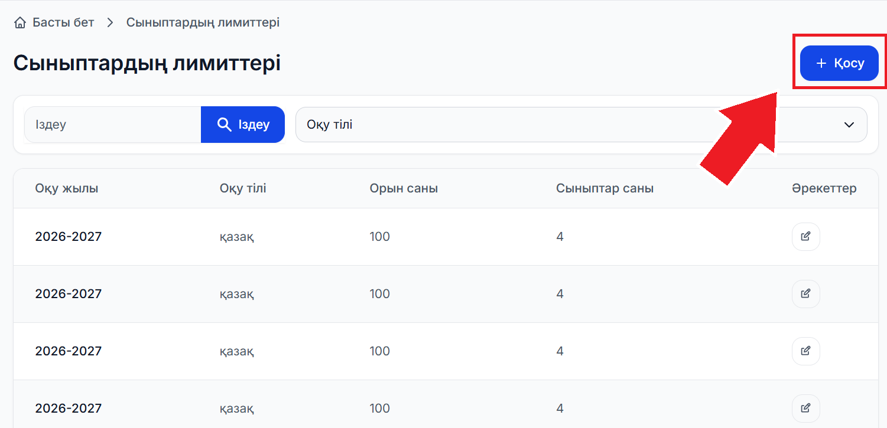
Өзгерістер енгізіп, «Сақтау» батырмасын басыңыз.
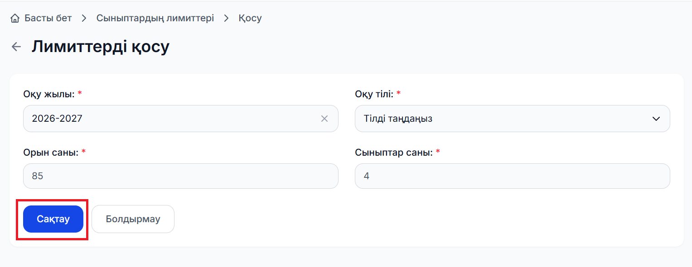
«Менің ұйымым» → «Шағын аудан» бөліміне өтіңіз.
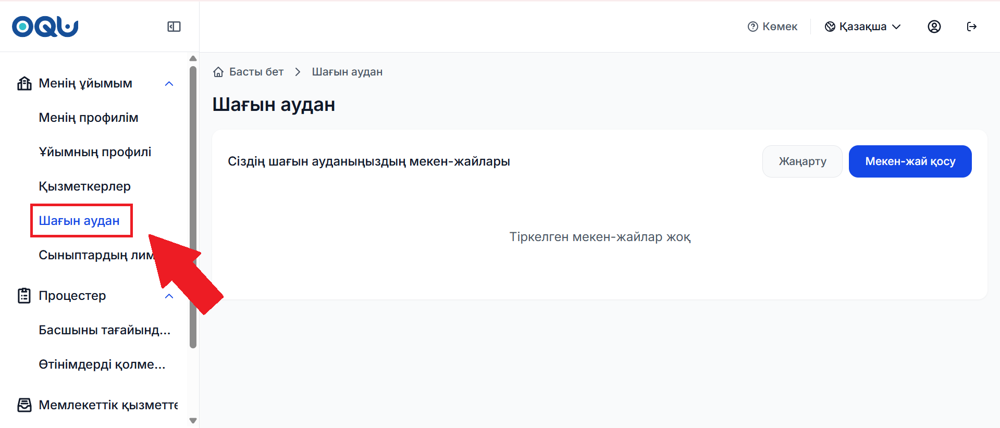
Бұл бөлімде сіздің ұйымыңызға бекітілген шағын ауданның мекен-жайлары көрсетіледі. Жаңа мекен-жай қосу үшін «Мекен-жай қосу» батырмасын басыңыз.
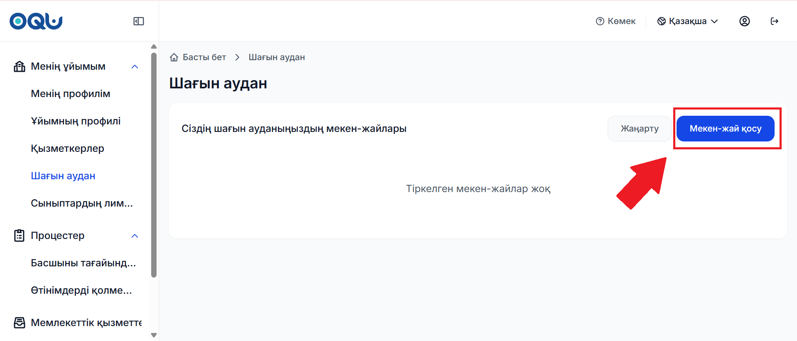
Ашылған бетте көшенің атын енгізіп, «Іздеу» батырмасын басыңыз. Төменде көрсетілген тізімнен қажетті мекен-жайды таңдаңыз.
Кейін «Тіркеу» батырмасын басыңыз. Сіз бірнеше мекен-жайды тіркей аласыз.
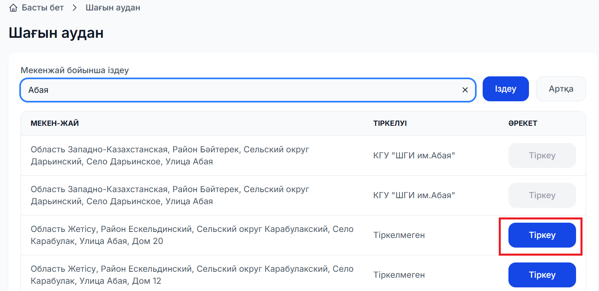
Мекенжайды өшіру үшін «Босату» батырмасын басыңыз.
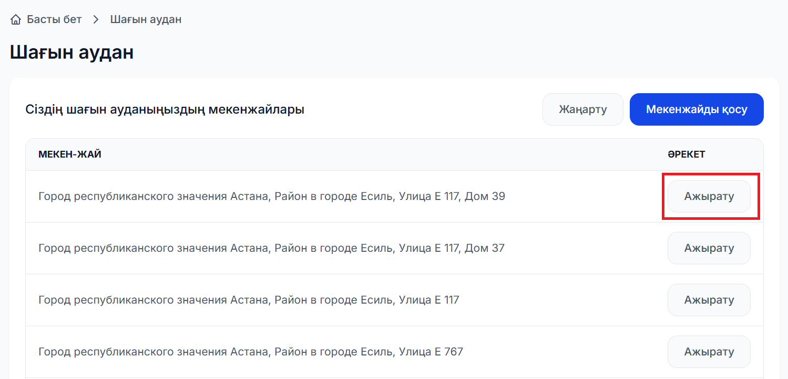
📋 II-бөлім. Өтінімдерді қалай өңдеу керек?
📹 Видеоның сілтемесі: [Бұл жерге видео сілтемесін қойыңыз]
Өтінімдерді өңдеуге кіріспес бұрын, нұсқаулықтағы дайындық әрекеттерін орындағаныңызға көз жеткізіңіз.
Кейін өтінімдерді өңдеуді бастай беруге болады, ол үшін төмендегі қадамдарды орындаңыз:
Маңызды мерзімдер: Өтінім түскен сәттен бастап 1 жұмыс күні ішінде қаралуы тиіс.
Мысалы: өтінім бейсенбі күні сағат 12:30-да берілсе, жұма күні сағат 12:30-ға дейін өтінім қаралып, шешім шығарылуы тиіс.
Егер өтінім жұмыс күнінің аяқталуынан кейін, демалыс немесе мереке күні түссе, мерзімі келесі жұмыс күнінен бастап есептеледі. Мерзімі өткен өтінімдер «Мерзімі өткен» деп белгіленеді.
Платформаға «Орындаушы» рөлінде кіріңіз.
«Мемлекеттік қызметтер» → «Өңделмеген өтінімдер» бөліміне өтіңіз: https://oqu.edu.kz/organization/gov-services
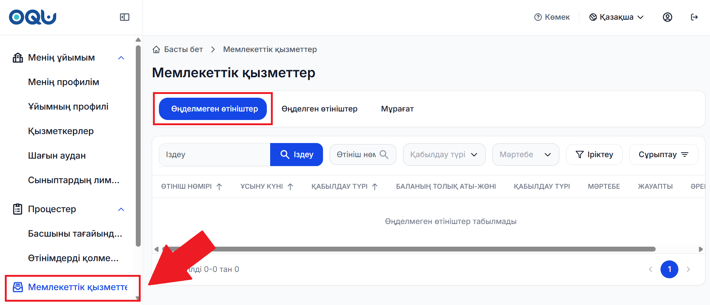
Өтінім қатарындағы көз белгісін басып, өтінім картасын ашыңыз. «Қабылдау» немесе «Бас тарту» туралы шешім қабылдаңыз.
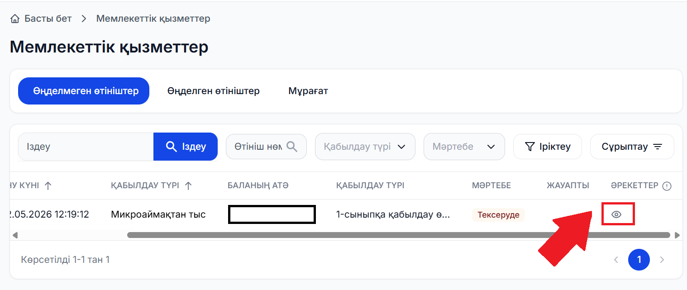
Өтінімді қабылдау үшін «Қабылдау» батырмасын басыңыз. Өтінім «Қабылданды» мәртебесіне ауысады.
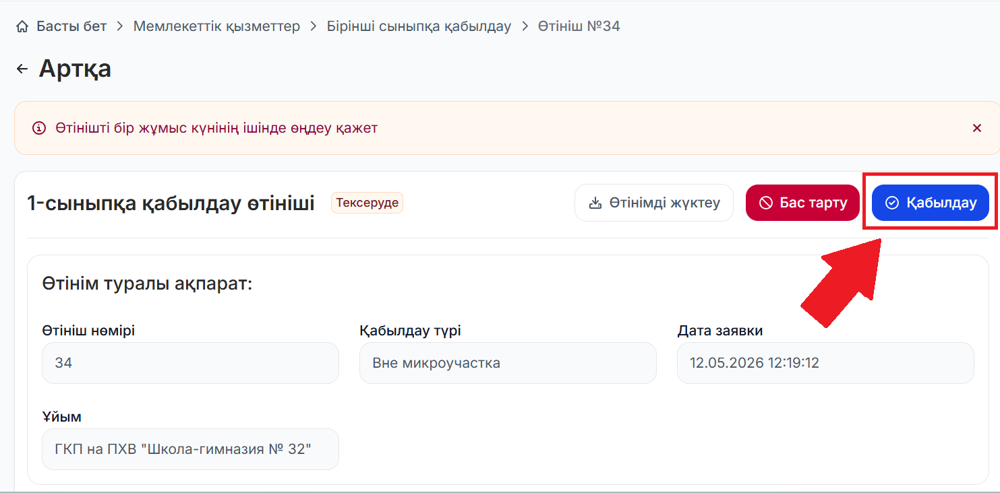
Өтінімді қабылдаудан бас тарту үшін «Бас тарту» батырмасын басып, себебін белгілеңіз. «Растау және жіберу» батырмасын басыңыз.
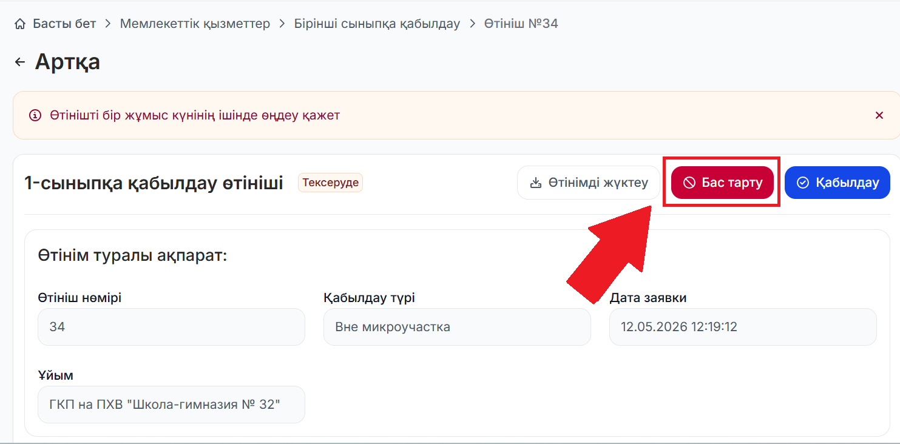
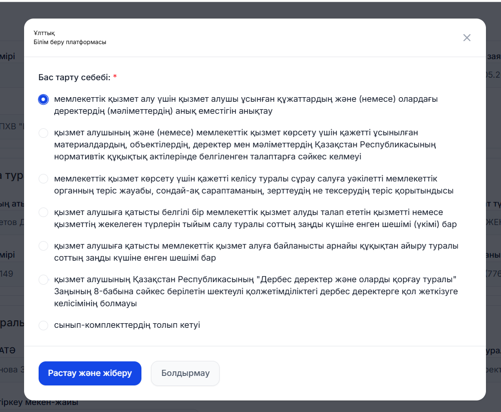
Платформаға «Директор» рөлінде кіріп, өтінімге қол қойыңыз.
«Қол қою» батырмасын басып, құжатқа eGov Business QR-коды немесе заңды тұлғаның ЭЦҚ кілті арқылы қол қойыңыз.
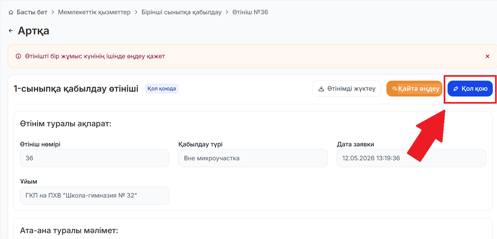
Егер сіз Орындаушының шешімімен келіспесеңіз, «Қайта өңдеуге жіберу» батырмасын басып, қайтару себебін толтырыңыз.
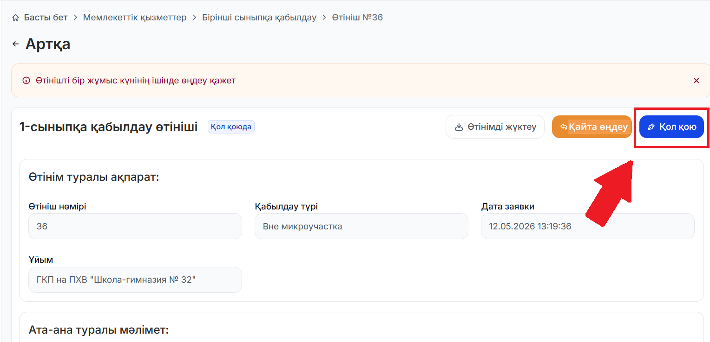
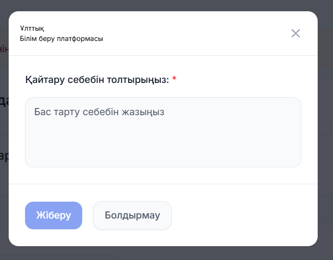
👨👩👦 III-бөлім. Ата-ана тарапынан өтінім беру
Бұл бөлімде мектеп қызметкері жалпы түсінуі үшін ата-ананың өтінім беру барысы сипатталған.
Назар аударыңыз: Егер ата-ананың өтінімді онлайн беру бойынша сұрақтары туындаса, ол 1414 нөмірі бойынша Біріңғай байланыс орталығына хабарласуы қажет.
📹 Видеоның сілтемесі: [Бұл жерге видео сілтемесін қойыңыз]
Жиі қойылатын сұрақтар
Кіру және авторизация
Мектептің жеке кабинетіне қалай кіру керек?
- OQU платформасының басты бетіндегі «Кіру» батырмасын басыңыз.
- Жүйе сізді eGov сайтына бағыттайды — QR-код немесе ЭЦҚ арқылы авторизациядан өтіңіз.
- Мобильді азаматтар базасында тіркелген нөміріңізге бес таңбалы код келеді. Оны енгізіп, «Жүйеге кіру» батырмасын басыңыз.
- Деректерді беруге рұқсат беріңіз.
- Алғаш кірген кезде дербес деректерді жинауға және өңдеуге келісімді растау қажет болады — телефон нөміріңізге 1414 нөмірінен SMS келеді, келісіммен жауап беріңіз.
- Растаудан кейін жүйе мектептің қолжетімді жеке кабинетін ашады.
Логин мен парольді қайдан алуға болады?
Қызметкерлер
Мектепте өтінімдерді кім өңдей алады?
- Директор — мектептің барлық өтінімдерін көреді, кез келген өтінімді қабылдай алады немесе қабылдаудан бас тарта алады, қайта өңдеуге қайтарады және қорытынды қолтаңба қояды. Директор қол қоймағанша, ешбір өтінім толық өңделген болып есептелмейді.
- Орындаушы — барлық өңделмеген өтінімдерді көреді, «Қабылдау» немесе «Бас тарту» шешімін шығара алады, бірақ қорытынды қол қою құқығы тек директорға ғана беріледі.
Қызметкерді қалай қосу керек?
- «Қызметкерлер» бөліміне өтіп, «Қосу» батырмасын басыңыз.
- Қызметкердің ЖСН-ін енгізіп, «Жіберу» батырмасын басыңыз.
- Қызметкердің нөміріне дербес деректерді өңдеуге келісімді растау үшін 1414 нөмірінен SMS келеді — ол 511 мәтінімен жауап беруі тиіс.
- Анықтамалықтан лауазымды таңдап, рөл тағайындаңыз — «Орындаушы» немесе «ОБҰ қызметкері». Екі рөлді бірге тағайындауға болады.
- «Сақтау» батырмасын басыңыз — қызметкер тізімде пайда болып, тиісті қолжетімділікті алады.
«ОБҰ қызметкері» рөлі дегеніміз не?
Сынып лимиттері
Сынып лимиттерін қайдан қарауға болады?
«3-ке 1» ережесі дегеніміз не?
Параллельді қалай қосу керек?
- «Ученики» → «Лимиты классов» бөліміне өтіп, «Қосу» батырмасын басыңыз.
- Жолдарды толтырыңыз: оқу жылы, сынып нөмірі, оқыту тілі, параллельдегі жалпы орын саны.
- «Қабылдауға белсенді» мәртебесін белгілеңіз.
- «Сақтау» батырмасын басыңыз.
Сынып лимиттерін қалай өңдеу керек?
- «Ученики» → «Лимиты классов» бөліміне өтіңіз.
- Қажетті параллельді таңдап, «Өңдеу» батырмасын басыңыз.
- Өзгерістер енгізіп, «Сақтау» батырмасын басыңыз.
Шағын аудандар
Шағын аудан дегеніміз не?
Шағын ауданға мекенжайды қалай қосу керек?
- «Шағын аудандар» бөліміне өтіп, «Мекенжай қосу» батырмасын басыңыз.
- Ашылған терезеде көшенің атын енгізіп, оны табыңыз және қажетті үйді шағын ауданыңызға бекітіңіз. Мұнда тек ұйымыңыз тіркелген елді мекеннің көшелері ғана қолжетімді болады.
- Кейін қажетті мекенжайды таңдап, «Тіркеу» батырмасын басыңыз.
- «Сақтау» батырмасын басыңыз.
Шағын ауданнан мекенжайды қалай жою керек?
- «Шағын аудандар» бөлімінен қажетті мекенжайды табыңыз.
- Таңдалған мекенжай қатарындағы «Ажырату» батырмасын басыңыз.
Мекенжай қосу кезінде тізімде қажетті көше жоқ
Шағын ауданнан тыс өтінімдерді қабылдауға бола ма?
Назар аударыңыз: шағын ауданнан тыс орын саны шектеулі. Жалпы лимит немесе шағын ауданнан тыс лимит таусылған кезде, өтінімді өңдеу барысында «Қабылдау» батырмасы қолжетімсіз болады — мұндай өтінімдерді тек қабылдаудан бас тартуға болады. Қабылдау кезінде шағын аудан бойынша өтінім берген балаларға басымдық беріледі.
Өтінімдерді өңдеу
Өтінімді қалай өңдеу керек?
- «Мемлекеттік қызметтер» → «Өңделмеген өтінімдер» бөліміне өтіңіз;
- Өтінім картасын ашыңыз;
- Өтінім берушінің, баланың деректерін және тіркелген құжаттарды тексеріңіз;
- «Қабылдау» немесе «Бас тарту» батырмасын басыңыз;
- Өтінім «Қол қоюда» мәртебесіне ауысып, директорға қорытынды қолтаңба қоюға жіберіледі.
Маңызды ережелер:
- Өтінімдер қатаң түрде түсу күні мен уақыты бойынша кезекпен өңделеді. Кезектен тыс өтінімді өңдеуге әрекет жасалғанда жүйе мынадай қате шығарады: «Кезектілік бұзылды, «Тексерілуде» мәртебесіндегі ертерек өтінімдер бар».
- Шағын ауданнан тыс қабылдау кезінде орын саны шектеулі. Жалпы лимит немесе шағын ауданнан тыс лимит таусылған кезде, өтінімді өңдеу барысында «Қабылдау» батырмасы қолжетімсіз болады — мұндай өтінімдерді солар бойынша тек бас тартуға болады.
- Шағын аудан бойынша берілген өтінімдерді көрсетілген лимиттен асырып қабылдауға болады.
Директор өтінім бойынша шешімге қалай қол қояды?
- «Қл қоюда» мәртебесіндегі өтінім картасын ашыңыз.
- «Қол қою» батырмасын басыңыз.
- Қол қою тәсілін таңдаңыз — eGov Business QR-коды немесе заңды тұлғаның ЭЦҚ-сы арқылы.
Өтінімді орындаушыға қайта өңдеуге қалай қайтаруға болады?
- «Қол қоюда» мәртебесіндегі өтінім картасын ашыңыз.
- «Қайта өңдеуге жіберу» батырмасын басыңыз.
- Қайтару себебін толтырыңыз (бұл жол міндетті түрде толтырылуы тиіс).
- «Жіберу» батырмасын басыңыз — өтінім «Тексерілуде» мәртебесіне оралады, орындаушыға сіздің түсініктемеңізбен хабарландыру келеді.
Өтінімді қарау мерзімі қандай?
Мерзімі өткен өтінім бойынша шешім шығаруға бола ма?
ЕББҚ бар балалардың өтінімдері қалай өңделеді?
Тасымалдау
Тасымалдауға өтінім бойынша шешімді қалай қабылдауға болады?
Қол қойғаннан кейін тасымалдау бойынша шешімді өзгертуге бола ма?
Құжаттар
Ата-ана өтінім бергенде қандай құжаттар ұсынады?
- Баланың 3×4 өлшеміндегі фотосуреті;
- Профилактикалық екпелер картасы (065/е нысаны);
- Бала денсаулығының паспорты (052-2/е нысаны);
- ПМПК анықтамасы — тек ерекше білім беру қажеттіліктері бар балаларға.